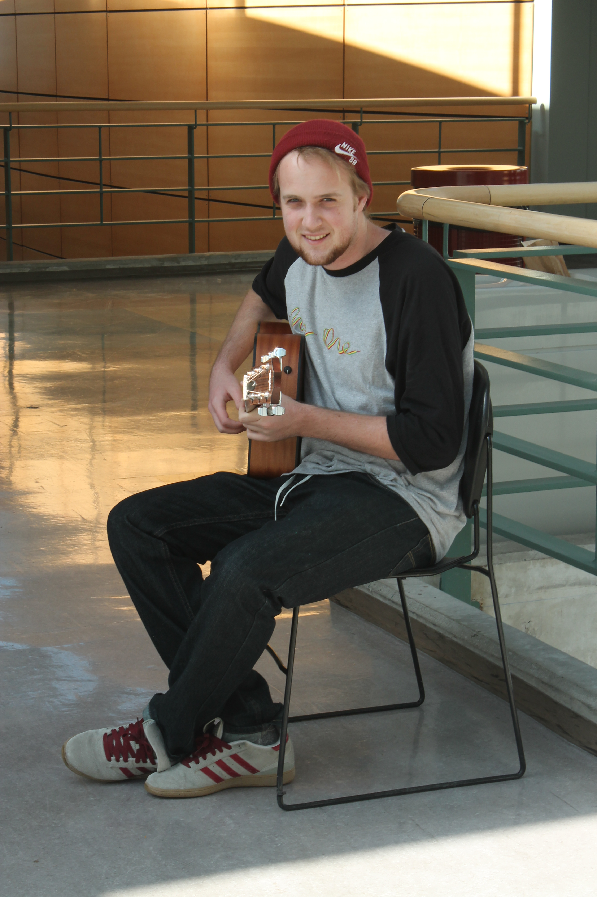

Article by Justin Bellmore
Photos by Alina Bykova
Uploaded on March 9, 2014
Perhaps the only real ingredients needed to perfect the artist recipe are patience, modesty, and an insatiable love for the craft. That certainly seems to be the case for second year math student Luke Shepherd.
The bashful, 20-year old guitarist attributes his musical appetite to his calm and sunny homeland of Barbados, which inspired his unique taste in the finger picking style.
“I really like the work of Sungha Jung and Gabriella Quevedo. They are also finger-picking artists… but you’ve probably never heard of them before,” Shepherd says with a laugh.
“When you play in this style, it relieves the pressure of having to have a band with you, because in the guitar’s plucking you can capture the essence of the melody.”
The St. Michaels native walked me through his musical experiences on Ryerson campus in his suave Barbadian accent, explaining that while self-validation is vital, there is an incomparable feeling of liberation and satisfaction that accompanies it.
“It gave me a sick outlet; playing guitar can take you out of any bad mood,” he says.
He adds that live performance offers a natural and organic dialogue between the artist and the audience. He considers this conversation the highest form of musical achievement.
An avid skateboarder, Shepherd and his friends build their own skate parks on the quiet streets of St. Michaels.
He explains that having no commercially built half pipes or ramps does not put them at any disadvantage. In fact, it’s an opportunity to form friendships with other members of the niche Barbadian skateboarding community and get creative.
While Shepherd’s capacity to skateboard may have been hindered by the harsh Toronto winter, his ability to create new song covers has not. His performances on campus have increased as a result of positive feedback and encouragement from peers. It didn’t take long before Shepherd broke out his guitar and played live at Lou Dawgs.
“Another member of the musicians@ryerson group convinced me to sign up, and I’m glad they did,” he says.
As for musical influences, Jung and Quevedo cannot take all of the credit. They are responsible for nurturing Shepherd’s musical development, but the seeds were sown by another source of inspiration; it is an honor that belongs to his mother.
Shepherd stresses that without his mom, none of his current endeavors could be possible. “Mom used to mess around on guitar and that’s what motivated me to attend a music school,” he says.
Shepherd admits there was a period in his life when music took a backseat to other priorities, and that it took three years to find it again – or rather, for it to find him. Shepherd’s musical flame was re-kindled when a friend consulted him about learning a new song.
“One of my friends was trying to learn a song that I was really familiar with, and my friend thought I was full of shit when I told him I could play it,” he says, “so I proved him wrong by filming it and showing him.”
That first video piloted his Youtube career. Shepherd focuses mainly on covering songs with an intricate or complex melody and transposes it to suit his style.
His most recent work features a cover of Evanescence’s popular track, “My Immortal”. Shepherd remains adamant about taking his time to learn about the music industry, but does not want to lose sight of the reason he started playing music in the first place; to evoke feeling from an audience.
“If something comes of it I’d be hyped, yes,” he says. “But what’s really important is the sense of accomplishment I get from it. You feed off of the vibe of people listening to you so it is the atmosphere that is the most important.”

Spotlight Editor in Chief
Vjosa Isai
vjosa.isai@ryerson.ca
Want to get your time under the lights? Are you a writer looking to join the Artist Spotlight initiative? E-mail us at music@ryerson.ca to see how!